When you complete this learning material, you will be able to:
Perform calculations related to frictional force.
You will specifically be able to complete the following tasks:
Describe the concept, types and laws of friction.
Whenever the surface of one body is in contact with the surface of another, there is a force that prevents or inhibits relative motion. This force is called friction, and it acts in a direction opposite to motion and parallel to the contacting surfaces.
Friction is important in all types of machinery because it absorbs power that is not recoverable. For example, in an automobile, around 20% of the power is used to counteract friction forces in the engine, power train and wheels. The work that friction forces do is normally dissipated as heat.
Friction keeps a belt from slipping on a pulley so that power can be transmitted. Without friction between wheels and the road, a vehicle would not be able to move. It also prevents objects from moving on surfaces where the angle is not excessive.
When forces are removed from a sliding object, friction ensures that it will come to a stop. However, this does mean that a force has to be applied to get an object moving on a surface.
Friction is the resistance to motion and exists whether or not the surfaces are moving relative to each other.
Static friction is the force exerted between two bodies that are not moving relative to each other.
Sliding (or kinetic) friction is the force acting against the direction of motion and parallel to the two surfaces while they are moving relative to each other. The coefficient of kinetic friction is less than the coefficient of static friction. This means that it takes more force to start a body sliding than it does to keep the body sliding.
Limiting friction is the maximum force that has to be applied to overcome static friction and to cause sliding motion.
Rolling friction is the resistance to motion when a wheel rolls along a surface. The coefficient of rolling friction is usually about \( \frac{1}{100} \) that of sliding friction. Wheels and other round objects will roll along the ground much more easily than they will slide along it.
Fluid friction occurs when there is resistance to motion in a fluid. This is evident in situations such as lubrication of bearings.
Internal friction can also occur in solids, such as rubber, that are easily deformable. It causes an increase in the temperature of the object.
A number of laws govern the behaviour of friction.
Define and calculate the coefficient of friction and applied forces for objects moved on a horizontal surface by forces parallel to the inclined plane.
Since friction is a result of the normal (also called loading) force and any resultant forces acting parallel to the surfaces, it is possible to define a coefficient of friction that is the ratio of these two forces.
The coefficient of sliding friction \( \mu \) (mu) is found experimentally and applies to a specific set of surfaces. It is defined as:
$$ \mu = \frac{F}{N} $$
where \( F \) is the friction force that balances the force acting on an object while it slides at a constant velocity, and \( N \) is the normal force that presses the two surfaces together. The forces for a simple block moving on a horizontal surface are shown in Fig. 1.
The same equation defines coefficient of static friction except that the friction force \( F \) is the limiting force or the maximum static friction force just before sliding motion commences. It is also determined experimentally.
Because the units for \( F \) and \( N \) are the same (newtons), the coefficient of friction has no units.
![Diagram illustrating the forces related to friction on a horizontal surface. A horizontal line represents the surface. A vertical line represents the Normal Force (N) acting downwards from a point on the surface. A horizontal line represents the Friction Force (F) acting to the left from the same point. A dashed line extends from the point at an angle phi (φ) below the normal force. A horizontal arrow pointing to the right, labeled 'Force Required to Move Object at Constant Velocity', is shown above the surface line, indicating the force needed to overcome friction.](01141eb99b707de5aead56f84afe3b1f_img.jpg)
The diagram shows a block on a horizontal surface. A vertical arrow pointing down from the block is labeled 'Normal Force N'. A horizontal arrow pointing to the left from the block is labeled 'Friction Force F'. A dashed line extends from the block at an angle labeled 'φ' (Angle of Friction) relative to the vertical normal force line. A horizontal arrow pointing to the right, labeled 'Force Required to Move Object at Constant Velocity', is shown above the surface, indicating the force needed to overcome friction.
Figure 1
Forces Related to Friction
The vector that results from the two forces produces an angle that is called the angle of friction. From Fig. 1, it can be seen that:
$$ \tan \varphi = \frac{F}{N} $$
From equation \( \mu = \frac{F}{N} \) , it can be seen that the \( \tan \varphi \) is equal to the coefficient of friction or:
$$ \tan \varphi = \mu $$
A mass of 50 kg slides along a horizontal plane at uniform velocity. If the coefficient of friction is 0.2, what are the forces required to move the mass and the friction angle?
The normal force is calculated using the equation:
$$ \begin{aligned} F &= mg \\ &= 50 \text{ kg} \times 9.81 \text{ N/kg} \\ &= 490.5 \text{ N} \end{aligned} $$
From equation \( \mu = \frac{F}{N} \) , the force required to move the object at constant velocity is the same as the friction force so that:
$$ \begin{aligned} F &= \mu N \\ &= 0.2 \times 490.5 \text{ N} \\ &= 98.1 \text{ N (Ans.)} \end{aligned} $$
The angle of friction is found from equation \( \tan \varphi = \mu \) :
$$ \begin{aligned} \tan \varphi &= \mu \\ \tan \varphi &= 0.2 \\ \varphi &= \tan^{-1} 0.2 \\ &= 11.31^\circ \text{ (Ans.)} \end{aligned} $$
An object of mass 100 kg is to slide on a horizontal plane. If the coefficient of static friction is 0.3 and the coefficient of sliding friction is 0.2, what are the forces required to start the object moving and the forces needed to keep it sliding at a constant velocity?
The normal force is calculated using the equation:
$$ \begin{aligned} N &= mg \\ &= 100 \text{ kg} \times 9.81 \text{ N/kg} \\ &= 981 \text{ N} \end{aligned} $$
From equation \( \mu = \frac{F}{N} \) the force required to start the object moving is:
$$ \begin{aligned} F &= \mu N \\ &= 0.3 \times 981 \text{ N} \\ &= 294.3 \text{ N (Ans.)} \end{aligned} $$
From equation \( \mu = \frac{F}{N} \) the force required to move the object at constant velocity is:
$$ \begin{aligned} F &= \mu N \\ &= 0.2 \times 981 \text{ N} \\ &= 196.2 \text{ N (Ans.)} \end{aligned} $$
Define and calculate the applied forces for objects moved on a horizontal surface by forces not parallel to the inclined plane.
The force applied to move an object may not be parallel to the surfaces, so additional calculations have to be done to resolve the vectors.
If a force is applied as shown in Fig. 2, the normal force will include not only the gravitational force due to the mass of the object, but also the vertical component of the applied force. The force available to overcome friction is the horizontal component of the applied force.
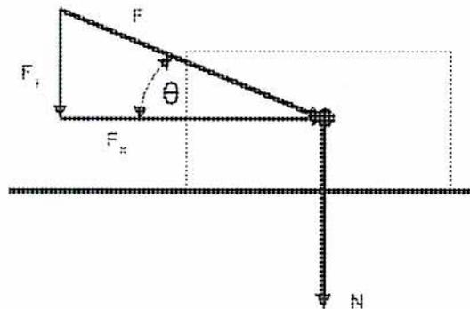
A diagram showing a horizontal surface represented by a thick line. An object is represented by a small circle on this surface. A force vector
\( F \)is applied to the object, pointing downwards and to the left at an angle
\( \theta \)below the horizontal. The horizontal component of this force is labeled
\( F_x \)and the vertical component is labeled
\( F_y \). A dashed rectangle is drawn with the force vector
\( F \)as the hypotenuse, with dashed lines indicating the components
\( F_x \)and
\( F_y \). A normal force vector
\( N \)is shown as a dashed line pointing vertically upwards from the object.
Figure 2
Non-parallel Force Acting Downwards
The vector equations for the applied force become:
$$ \sin \theta = \frac{F_y}{F} $$ $$ F_y = F \sin \theta $$ $$ F_x = F \cos \theta $$
The applicable version of equation \( F = \mu N \) becomes:
$$ F_x = \mu(N + F_y) $$
Substituting equations \( F_y = F \sin \theta \) into equation \( F_x = F \cos \theta \) , the force required to overcome friction and move an object at a constant velocity becomes:
$$ F_x = \mu(N + F_y) $$
$$ F \cos \theta = \mu(N + F \sin \theta) $$
$$ F \cos \theta = \mu N + \mu F \sin \theta $$
$$ F \cos \theta - \mu F \sin \theta = \mu N $$
$$ F = \frac{\mu N}{(\cos \theta - \mu \sin \theta)} $$
If an upwards force is applied as shown in Fig. 3, the vertical component of the applied force decreases the normal force. The force available to overcome friction is still the horizontal component of the applied force.
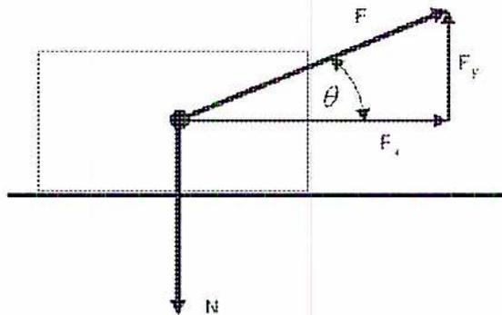
The diagram shows a rectangular block on a horizontal surface. A force vector \( F \) is applied to the block at an angle \( \theta \) above the horizontal. The horizontal component of this force is labeled \( F_x \) and the vertical component is labeled \( F_y \) . A normal force vector \( N \) is shown acting vertically downwards from the bottom of the block. A dashed rectangle indicates the original position of the block before the force was applied.
Figure 3
Non-parallel Force Acting Upwards
The vector equations for the applied force are the same as those shown in equations \( F_y = F \sin \theta \) and \( F_x = F \cos \theta \)
In this case, the applicable version of equation \( F = \mu N \) becomes:
$$ F_x = \mu(N - F_y) $$
The force required to overcome friction and move an object at a constant velocity becomes:
$$ F = \frac{\mu N}{(\cos \theta + \mu \sin \theta)} $$
A force is applied at an angle of \( 30^\circ \) downwards on an object of mass 40 kg. If the coefficient of sliding friction is 0.5, what is the force required to keep it sliding at a constant velocity?
The normal force due to the mass is calculated using the equation:
$$ \begin{aligned} N &= mg \\ &= 40 \text{ kg} \times 9.81 \text{ N/kg} \\ &= 392.4 \text{ N} \end{aligned} $$
The required force is obtained from equation \( F = \frac{\mu N}{(\cos \theta + \mu \sin \theta)} \)
$$ \begin{aligned} F &= \frac{\mu N}{(\cos \theta - \mu \sin \theta)} \\ &= \frac{0.5 \times 392.4 \text{ N}}{\cos 30^\circ - 0.5 \sin 30^\circ} \\ &= \frac{196.2 \text{ N}}{0.866 - 0.25} \\ &= 318.5 \text{ N (Ans.)} \end{aligned} $$
A force is applied at an angle of \( 30^\circ \) upwards on an object of mass 40 kg. If the coefficient of sliding friction is 0.5, what is the force required to keep it sliding at a constant velocity?
The normal force due to the mass is calculated using the equation
$$ \begin{aligned} N &= mg \\ &= 40 \text{ kg} \times 9.81 \text{ N/kg} \\ &= 392.4 \text{ N} \end{aligned} $$
The required force is obtained from equation \( F = \frac{\mu N}{(\cos \theta + \mu \sin \theta)} \)
$$ \begin{aligned} F &= \frac{\mu N}{(\cos \theta + \mu \sin \theta)} \\ &= \frac{0.5 \times 392.4 \text{ N}}{\cos 30^\circ + 0.5 \sin 30^\circ} \\ &= \frac{196.2 \text{ N}}{0.866 + 0.25} \\ &= 175.8 \text{ N (Ans.)} \end{aligned} $$
Define and calculate the applied forces for objects moved on an inclined plane.
When an object rests on an inclined plane, the force of static friction counteracts the force of gravity. As long as the angle of the incline is not too great, the object remains at rest. If the incline is slowly increased, the object starts to slide at a certain angle called the angle of repose . From Fig. 4, it can be seen that, at the point of initial motion, the limiting friction force must equal the force gravity imposes on the object so that:
$$ \mu W \cos \alpha = W \sin \alpha $$
$$ \mu = \frac{\sin \alpha}{\cos \alpha} $$
$$ \mu = \tan \alpha $$
The coefficient of static friction can be determined using the angle of repose. The coefficient of static friction is independent of the mass of the object.
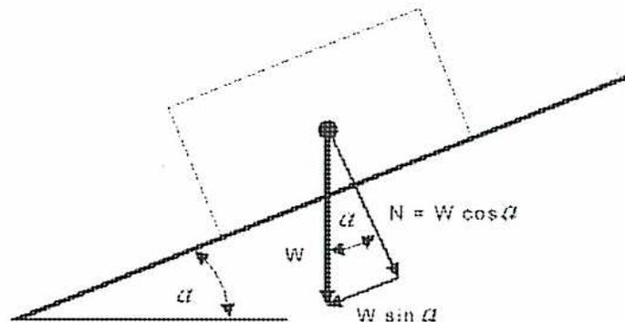
A diagram showing a rectangular block on a plane inclined at an angle
\( \alpha \)to the horizontal. The block is shown in two positions: a solid outline for its initial position and a dashed outline for its position after being moved up the incline. A vector diagram is drawn from the center of the block, representing the forces acting on it. The weight
\( W \)acts vertically downwards. This weight is resolved into two components:
\( W \sin \alpha \)acting parallel to the incline, pointing downwards, and
\( N = W \cos \alpha \)acting perpendicular to the incline, pointing outwards. The angle
\( \alpha \)is also indicated between the vertical weight vector and the normal force vector.
Figure 4
Object on Incline in Equilibrium
Raising the incline can also determine the coefficient of sliding friction except that the object needs to be tapped lightly to overcome the limiting force. The incline is increased until the object keeps on sliding.
If the object is required to slide up an inclined plane, the total force applied must overcome both the force of friction and the force of gravity. Fig. 5 illustrates the forces applied.
$$ \begin{aligned}\text{Force of friction} &= \mu \times N \\ &= \mu W \cos \alpha \\ \text{Force of gravity} &= W \sin \alpha\end{aligned} $$
The total force required to move the object up the plane is the sum of the two forces so that:
$$ F = W \sin \alpha + \mu W \cos \alpha $$
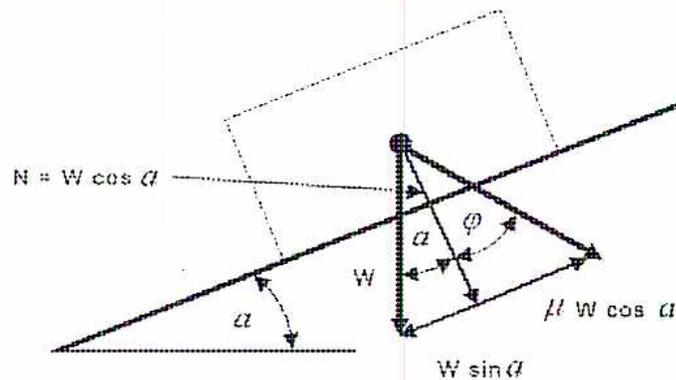
A diagram showing a rectangular block on a plane inclined at an angle
\( \alpha \)to the horizontal. The weight
\( W \)of the block is represented by a vertical vector. This weight is resolved into two components:
\( W \sin \alpha \)acting down the incline and
\( W \cos \alpha \)acting perpendicular to the incline. The normal force
\( N \)is shown as a vector perpendicular to the incline, equal in magnitude to
\( W \cos \alpha \). The force of friction is shown as a vector acting up the incline, labeled
\( \mu W \cos \alpha \). An angle
\( \phi \)is indicated between the weight vector
\( W \)and its component
\( W \cos \alpha \). A dashed rectangle shows the block's position if it were moved further up the incline.
Figure 5
Forces Applied to an Object on an Incline
If the object is to slide down the plane at a uniform velocity, the force of gravity will assist in overcoming the frictional force and a smaller force is needed to move the object. The equation for the required force becomes:
$$ F = \mu W \cos \alpha - W \sin \alpha $$
A force is required only if the angle of incline is less than the angle of repose.
If the angle of incline is greater than the angle of repose, a force is required to keep it stationary. This force can be calculated from the equation:
$$ F = W \sin \alpha - \mu W \cos \alpha $$
A rope parallel to the plane draws a 90 kg object up an inclined plane 12 m long and 6 m high (Fig. 6). If the coefficient of sliding friction is 0.3, what is the force required to move it at a constant velocity?
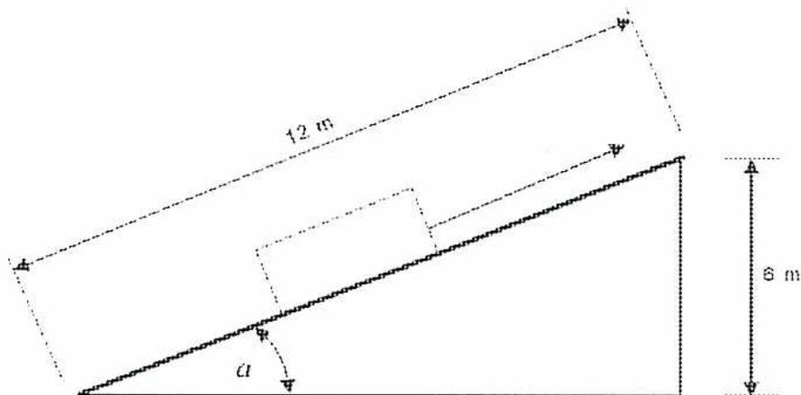
A diagram of an inclined plane. The plane is represented by a solid line sloping upwards from left to right. A dashed line forms a right-angled triangle with the plane, showing the vertical height and horizontal base. The hypotenuse (the plane) is labeled '12 m'. The vertical side is labeled '6 m'. A rectangular block sits on the plane. A dashed line representing a rope is attached to the block and runs parallel to the plane. The angle between the horizontal base and the plane is labeled with the Greek letter alpha (α).
Figure 6
Inclined Plane
The angle of the incline is:
$$ \begin{aligned}\sin \alpha &= \frac{6}{12} \\ \alpha &= 30^\circ\end{aligned} $$
The force gravity imposes is calculated as:
$$ \begin{aligned}W &= mg \\ &= 90 \text{ kg} \times 9.81 \text{ N/kg} \\ &= 882.9 \text{ N}\end{aligned} $$
The force to move the object up the plane is found using equation
$$ F = W \sin \alpha + \mu W \cos \alpha : $$
$$ \begin{aligned}F &= W \sin \alpha + \mu W \cos \alpha \\ &= 882.9 \text{ N} \times \sin 30^\circ + 0.3 \times 882.9 \text{ N} \times \cos 30^\circ \\ &= 670.83 \text{ N (Ans.)}\end{aligned} $$
A mass of 100 kg rests on a plane inclined at \( 12^\circ \) to the horizontal. If the coefficient of sliding friction is 0.32, what is the force required to move it at a constant velocity up the plane and down the plane. What is the angle of repose?
The force gravity imposes is calculated as:
$$ \begin{aligned} W &= mg \\ &= 100 \text{ kg} \times 9.81 \text{ N/kg} \\ &= 981 \text{ N} \end{aligned} $$
The force to move the object up the plane is found using equation
$$ F = W \sin \alpha + \mu W \cos \alpha : $$
$$ \begin{aligned} F &= W \sin \alpha + \mu W \cos \alpha \\ &= 981 \text{ N} \times \sin 12^\circ + 0.32 \times 981 \text{ N} \times \cos 12^\circ \\ &= \mathbf{511.0 \text{ N}} \text{ (Ans.)} \end{aligned} $$
The force to move the object down the plane is found using equation
$$ F = W \sin \alpha - \mu W \cos \alpha : $$
:
$$ \begin{aligned} F &= \mu W \cos \alpha - W \sin \alpha \\ &= 0.32 \times 981 \text{ N} \times \cos 12^\circ - 981 \text{ N} \times \sin 12^\circ \\ &= \mathbf{103.1 \text{ N}} \text{ (Ans.)} \end{aligned} $$
The angle of repose is found using equation \( \mu = \tan \alpha \) :
$$ \begin{aligned} \mu &= \tan \alpha \\ &= 0.32 \\ \alpha &= \mathbf{17.75^\circ} \text{ (Ans.)} \end{aligned} $$
A mass of 50 kg rests on a plane inclined at \( 15^\circ \) to the horizontal. If the coefficient of sliding friction is 0.25, will the mass move down the plane without any additional force? If it does move, what force is required to prevent it from sliding?
The force gravity imposes is calculated as:
$$ \begin{aligned} W &= mg \\ &= 50 \text{ kg} \times 9.81 \text{ N/kg} \\ &= 490.5 \text{ N} \end{aligned} $$
The force of gravity acting on the object is:
$$ \begin{aligned} F &= W \sin \alpha \\ &= 490.5 \text{ N} \times \sin 15^\circ \\ &= 126.94 \text{ N} \end{aligned} $$
The friction force is
$$ \begin{aligned} F &= \mu W \cos \alpha \\ &= 0.25 \times 490.5 \text{ N} \times \cos 15^\circ \\ &= 118.45 \text{ N} \end{aligned} $$
Because the force of gravity is greater than the friction force, the object will slide downwards if unrestrained. The force required to hold the object is:
$$ \begin{aligned} F &= \text{force of gravity} - \text{friction force} \\ &= 126.94 - 118.45 \\ &= \mathbf{8.49 \text{ N}} \text{ (Ans.)} \end{aligned} $$
Define and calculate the frictional forces on a screw jack.
One application for forces on an inclined plane involves a screw jack (Fig. 7). This consists of a screw-operated jack for lifting, exerting pressure, or adjusting position (as of a machine part).
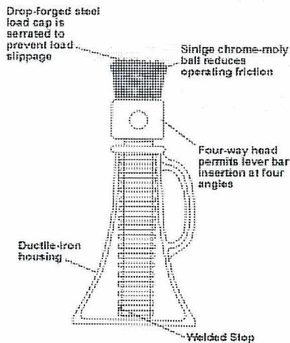
A technical line drawing of a screw jack. The jack consists of a central screw threaded through a housing. At the top is a load cap. On the side is a handle with a four-way head. The base of the housing has a welded stop. Labels with leader lines point to various parts: 'Drop-forged steel load cap is serrated to prevent load slippage' points to the top cap; 'Sinige chrome-moly ball reduces operating friction' points to the top of the screw; 'Four-way head permits lever bar insertion at four angles' points to the handle head; 'Ductile-iron housing' points to the main body; and 'Welded Stop' points to the base.
Figure 7
Screw Jack
(Courtesy of L. K. Goodwin Co.)
The screw is the inclined plane against which a force is applied. It is assumed here that the screw jack is vertical so that the force of gravity acts as shown in Fig. 8. The difference between the screw jack and the previous discussion of objects moving up a plane is that the force on a screw jack is applied horizontally, usually by a handle at a radius to gain mechanical advantage.
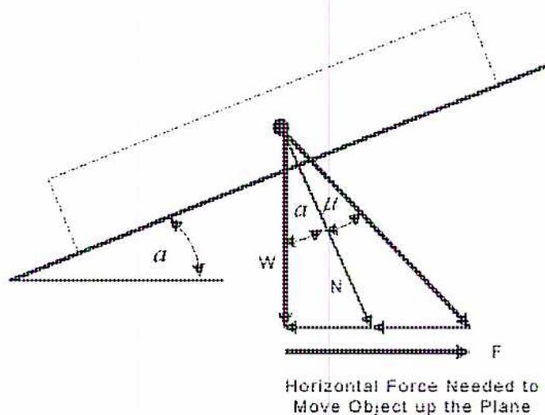
Horizontal Force Needed to Move Object up the Plane
Figure 8
Forces Applicable to a Screw Jack
The angle of the incline can be determined from the thread pitch and the mean circumference (see Fig. 9) using the equation:
$$ \alpha = \tan^{-1} \frac{P}{2\pi r} $$
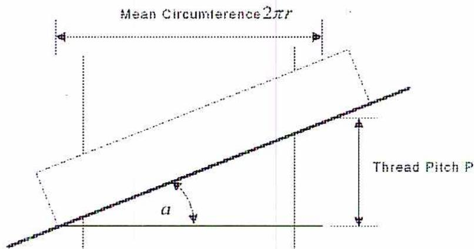
Figure 9
Calculating Thread Pitch Angle
The horizontal force to move the screw jack upwards is the sum of the gravitational and friction forces, which can be seen from Fig. 8, to result in the equation:
$$ F = W \tan(\alpha + \phi) $$
Subtracting the force of gravity from the force of friction gives the horizontal force to move the screw jack downwards, so the equation becomes:
$$ F = W \tan(\phi - \alpha) $$
A small pitch thread makes the angle of the thread smaller than the angle of friction and thus a safer screw jack. It also makes it easier to turn due to the lower required force, but more turns are needed to raise it.
A screw jack is used to lift a mass of 2 tonnes. The pitch of the thread is 10 mm with a mean diameter of 5 cm and the coefficient of friction is 0.2. What horizontal force is required with a lever of 0.75 m to lift the load?
The force of the mass due to gravity is:
$$ \begin{aligned} W &= mg \\ &= 2000 \text{ kg} \times 9.81 \text{ N/kg} \\ &= 19\,620 \text{ N} \end{aligned} $$
The angle of the thread is calculated from equation \( \alpha = \tan^{-1} \frac{P}{2\pi r} \) as:
$$ \begin{aligned} \alpha &= \tan^{-1} \frac{P}{2\pi r} \\ &= \tan^{-1} \frac{10 \text{ mm}}{2\pi \times 25 \text{ mm}} \\ &= 3.64^\circ \end{aligned} $$
The angle of friction comes from equation \( \mu = \tan \alpha \) :
$$ \begin{aligned} \mu &= \tan \alpha \\ \alpha &= \tan^{-1} \mu \\ &= \tan^{-1} 0.2 \\ &= 11.3^\circ \end{aligned} $$
The force needed at the mean radius is computed using equation \( F = W \tan(\alpha + \phi) \) :
$$ \begin{aligned} F &= W \tan(\alpha + \phi) \\ &= 19\,620 \text{ N} \times \tan(3.64 + 11.3) \\ &= 5235 \text{ N} \end{aligned} $$
Taking the ratio between the mean radius and the radius of the lever calculates the force with a lever. This means that the actual force required is:
$$ \begin{aligned} F &= 5235 \text{ N} \times \frac{25 \text{ mm}}{750 \text{ mm}} \\ &= 174.5 \text{ N (Ans.)} \end{aligned} $$
Define and calculate maximum torque on a belt drive.
Belt drives depend on friction to prevent slippage so that power can be transmitted. It is possible to calculate the maximum torque before the belt starts to slip. Fig. 10 shows the geometry of a belt and pulley system.
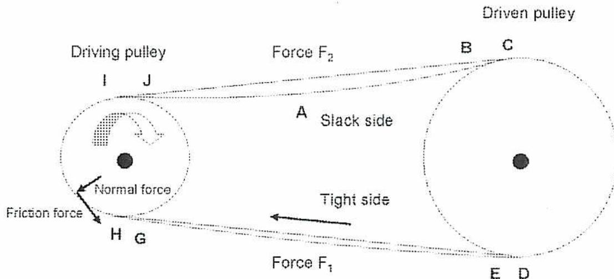
The diagram illustrates a belt drive system with two pulleys. The left pulley is labeled 'Driving pulley' and the right one is 'Driven pulley'. The belt is shown in two states: a solid line representing the tight side and a dashed line representing the slack side. The top part of the belt is the slack side, labeled 'A Slack side', with a force \( F_2 \) indicated. The bottom part is the tight side, labeled 'Tight side', with a force \( F_1 \) indicated. Arrows show the clockwise rotation of both pulleys. On the driving pulley, a small shaded segment is shown with arrows pointing to it labeled 'Normal force' and 'Friction force'. Points I and J are marked on the driving pulley's circumference, while points A, B, C, D, E, F, G, and H are marked along the belt's path.
Figure 10
Belt and Pulley Forces
The force on the tight side is higher than on the slack side. The difference between the two forces, \( F_1 - F_2 \) , is the torque transmitted from the driving wheel and also determines the friction forces applied. Putting tension on the belt prior to operation assists with increasing the normal force available for friction. However, excessive pre-tension decreases the life of the belt because it is continually stretched and released as it passes around the pulleys.
It is interesting to note the change in the forces on the belt. Fig. 11 shows how the force varies as the belt moves from the tight side to the driving pulley and then to the slack side. There are sharp jumps in the tension as the belt moves onto each pulley and frictional force is applied. When the belt leaves the pulley, there is a corresponding drop in tension.
![Figure 11: Forces on a Belt. A graph showing the force on a belt as a function of distance along the belt. The vertical axis is labeled 'Force on belt' and the horizontal axis is labeled 'Distance along belt'. The graph shows a step-like function with two horizontal segments at different force levels, labeled 'Force F2' and 'Force F1'. The belt wraps around two pulleys: a 'Driven pulley' and a 'Driving pulley'. The points on the graph are labeled A, B, C, D, E, F, G, H, I, J, and A again at the end. The force F1 is the higher force level, and F2 is the lower force level.](9ce50bc10864dc86e1cdee4be08f1897_img.jpg)
Figure 11
Forces on a Belt
The maximum force allowed before slippage occurs is defined using the equation:
$$ F_1 = F_2 e^{\mu\alpha} $$
where \( F_1 \) = tension of tight side, N
\( F_2 \) = tension of slack side, N
\( \mu \) = coefficient of friction
\( \alpha \) = angle of wrap, radians
\( e = 2.718 \) (base of natural logarithm)
A belt with a 0.5 coefficient of friction drives a pulley with a diameter of 50 cm. The force on the tight side is 1000 N. Assuming that the belt wraps around half of the pulley, what is the maximum torque allowed?
Since there are \( 2\pi \) radians in a circle, the wrap angle is \( \pi \) radians. The slack side is determined using equation \( F_1 = F_2 e^{\mu\alpha} \) :
$$ \begin{aligned} F_1 &= F_2 e^{\mu\alpha} \\ F_2 &= \frac{F_1}{e^{\mu\alpha}} \\ &= \frac{1000 \text{ N}}{e^{0.5 \times \pi}} \\ &= \frac{1000 \text{ N}}{2.718^{0.5 \times \pi}} \\ &= \frac{1000 \text{ N}}{4.8097} \\ &= 207.91 \text{ N} \end{aligned} $$
Therefore, the maximum torque before slippage is:
$$ \begin{aligned} F_1 - F_2 &= 1000 \text{ N} - 207.91 \text{ N} \\ &= 792.09 \text{ N (Ans.)} \end{aligned} $$
A1.10
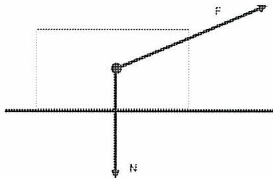
The diagram shows a rectangular block on a horizontal surface. A vertical line with a downward-pointing arrow from the center of the block is labeled 'N', representing the normal force. A diagonal line with an arrow pointing upwards and to the right from the center of the block is labeled 'F', representing an applied force at an angle. The surface is represented by a horizontal line.
Non-Parallel Forces
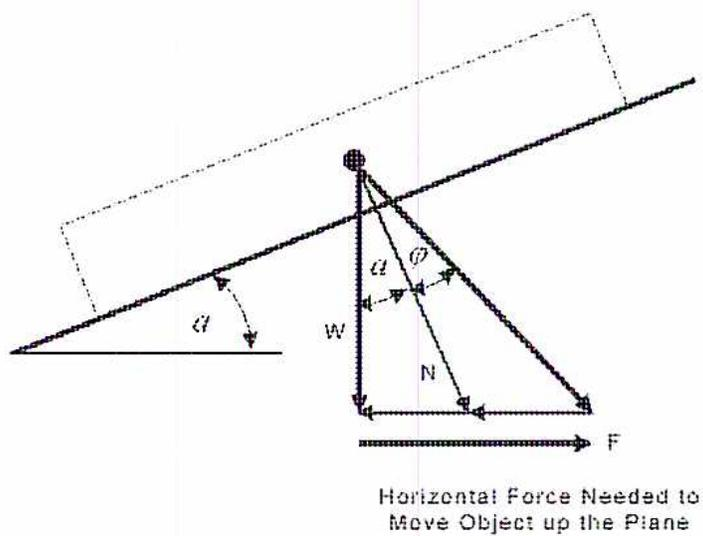
Horizontal Force Needed to
Move Object up the Plane
Forces Applicable to a Screw Jack